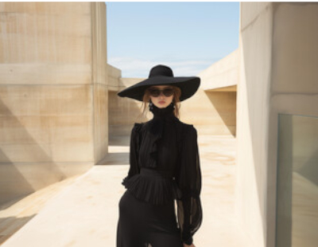
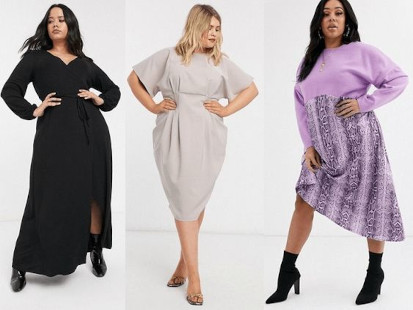

| Colorimetría | Estilismo | Morfología Corporal |
|---|---|---|
 |
 |  |
¡Bienvenidos a tu asesoría de imagen!
Un espacio dedicado a la moda, el estilo y la autoconfianza
Aquí encontrarás todo lo que necesitas para descubrir y potenciar tu estilo personal, adaptado a tu cuerpo, tus colores y tus preferencias. Sabemos que la moda es mucho más que ropa; es una forma de expresión que te permite mostrar quién eres al mundo, por eso estamos aquí para ayudarte a encontrar ese estilo único que te haga sentir segura y cómoda en tu día a día.
En este sitio, te ofrecemos contenido especializado para explorar diferentes aspectos de tu estilo personal: desde cómo identificar qué tipo de ropa favorece tu cuerpo, hasta descubrir la magia de la colorimetría, esa ciencia que te ayudará a elegir los colores que realzan tu belleza natural. Además, aprenderás a conocer tu forma corporal y cómo resaltar tus mejores atributos, eligiendo prendas que se adapten perfectamente a ti, y no solo a las tendencias.
Cada cuerpo es único y cada persona tiene su propio estilo, por eso te ofrecemos herramientas y consejos prácticos para que puedas vestirte de manera auténtica y empoderada. Ya sea que busques darle un giro a tu armario, encontrar los colores que te hacen brillar o saber cómo vestir según tu silueta, aquí encontrarás todo lo que necesitas para sentirte increíble y expresarte a través de la moda.
¡Comienza tu viaje hacia un estilo personal y auténtico, y déjanos acompañarte en cada paso del camino!